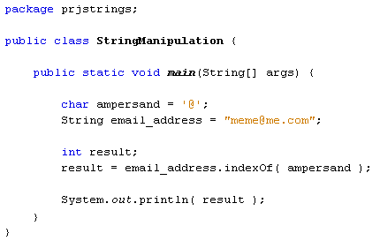
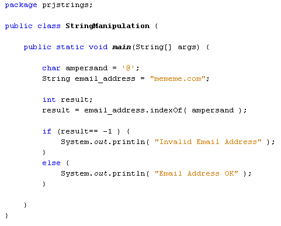
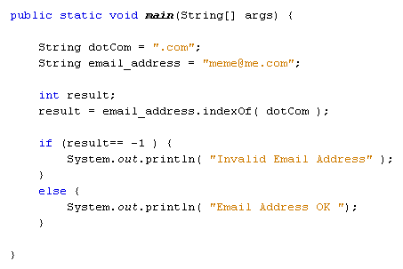
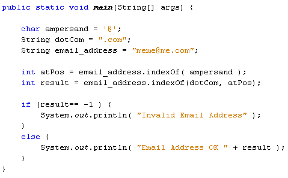

The Java Method indexOf
The indexOf method is used to locate a character or string within another string. For example, you can use it to see if there is a @ character in an email address. Let's use that example in some code.
Again, you can either delete or comment out the code you already have. But here's the new code to try:

We want to check if the @ sign is in the email address, so we first set up a char variable and assign it a value of '@'. (Note the single quotes for the char variable). After setting up an email address, we have a result variable. This is an int variable. The reason that result is an integer is because the indexOf method will return a value. It will return the position number of the ampersand character in the string email_address. Here's the relevant line:
result = email_address.indexOf( ampersand );
The string you're trying to search comes first. After a dot, type indexOf. In between the round brackets of indexOf, you have several options. One of the options is to type a single character (or the name of char variable). We've placed our ampersand variable between the round brackets of indexOf. Java will then tell us the position of the @ character in the email address. It will store the value in the result variable.
When you run the code, the output will be 4. You might think that the @ sign is the fifth character in the email address. But indexOf starts counting at 0.
However, if the character is not in the word that you're searching, indexOf will return a value of -1. To test this out, delete the @ sign from your email_address string. Then run your code again. You'll see -1 as the output.
You can use the return value of -1 to your advantage. Here's the code again, only with an IF statement that examines the value of the result variable:

So if the result of indexOf is -1 then we can do one thing, else allow the user to continue.
You can also use indexOf to test for more than one character. The code below checks the email address to see if it ends with ".com":

The code is almost identical, except we're now using a String variable to hold the text we want to check for (.com), and not a char variable.
Again, a result of -1 will be returned if the text to search for is not found in the String that comes before the dot of indexOf. Otherwise, indexOf will return the position of the first of the matching character. In the code above, the dot is the seventh character of the email address, when you start counting from 0.
You can also specify a starting position for your searches. In our email address example, we can start searching for the ".com" after the @ symbol. Here's some code that first locates the position of the @ symbol, and then uses that as the start position to search for ".com".

The new line of code is this one:
result = email_address.indexOf( dotCom, atPos );
The only thing different is the addition of an extra variable between the brackets
of indexOf. We still have the string we want to search for (which is whatever
text is in the dotcom variable), but we now have a starting position for the
search. This is the value of the variable called atPos. We get the atPos value
by using indexOf to locate the position of the @ symbol in the email address.
Java will then start the search from this position, rather than starting at
0, which is the default.
Ends With … Starts With
For the programme above, you can also use the inbuilt method endsWith:
Boolean ending = email_address.endsWith( dotcom );
You need to set up a Boolean variable for endsWith, because the method returns an answer of true or false. The string you're trying to test goes between the round brackets of endsWith, and the text you're searching goes before it. If the text is in the search string then a value of true is returned, else it will be false. You can add an if … else statement to check the value:
if (ending == false ) {
System.out.println( "Invalid Email Address"
);
}
else {
System.out.println( "Email Address OK "
);
}
The method startsWith is used in a similar way:
Boolean startVal = email_address.startsWith( dotcom );
Again, the return value is a Boolean true or false.
In the next lesson, you'll learn how to use a method called substring.